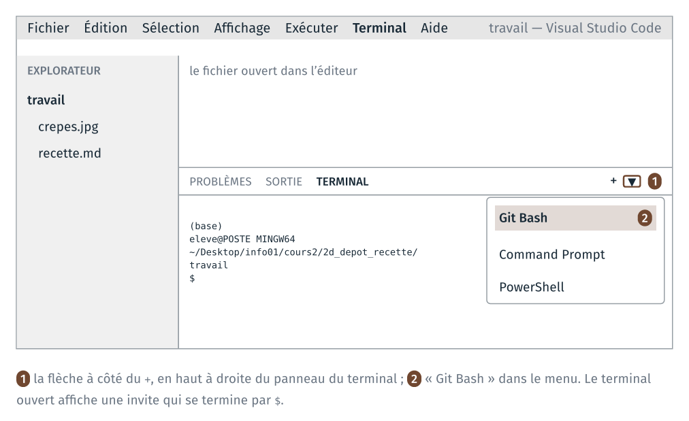
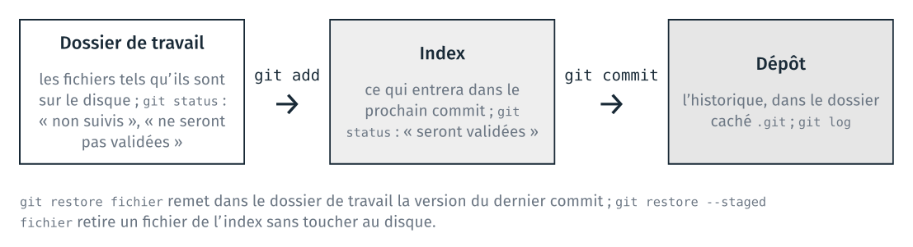
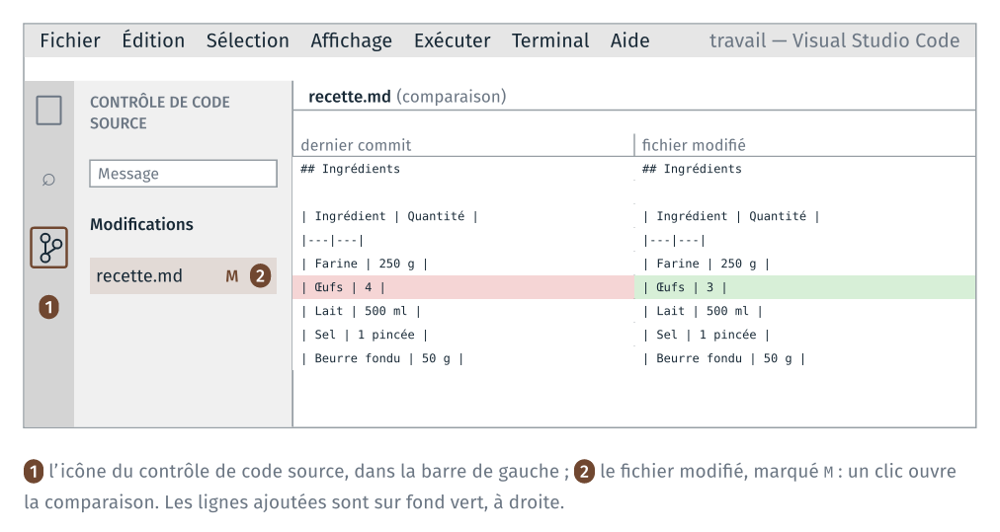
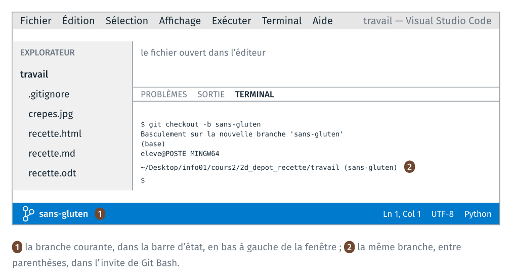
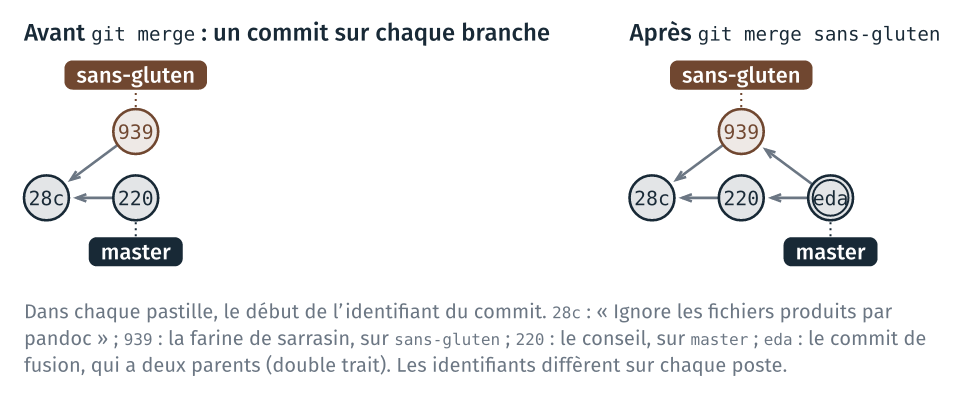
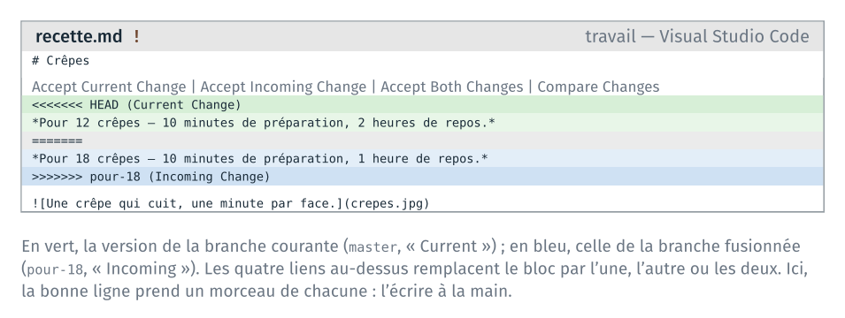

TD 2d — Un dépôt git pour la recette#
Note
Les fichiers des TD de la séance sont dans l’archive info01-cours2_v2.zip.
Version 2 du cours 2 : proposition de travail pour 2027-2028. Les TD joués en 2026 sont ceux de la séance 2, dans la partie « Archive 2026 ».
Ce guide détaille les étapes du TD 2d. Le TD versionne avec git la recette écrite en Markdown au TD 2c : un premier commit, des modifications comparées, des fichiers produits par pandoc tenus hors du dépôt, puis une branche, une fusion et un conflit. Il dure une quarantaine de minutes. L’étape 7 est pour ceux qui ont fini.
Pour chaque étape, le guide donne :
les commandes à taper, dans l’ordre ;
ce que git affiche en retour, relevé sur un poste où git parle français ;
comment vérifier que la commande a fonctionné, et quoi faire sinon.
Les sorties de ce guide ont été relevées avec git 2.43 en français. Sur un
poste où git parle anglais, les messages sont les mêmes, en anglais : le
guide donne entre parenthèses les phrases anglaises à reconnaître. Les
identifiants de commit (a16d497…) sont différents sur chaque poste.
Étape |
Objectif |
Ce qu’on fait |
Commits à la fin |
|---|---|---|---|
0 |
séparer le travail des fichiers livrés |
copier la recette dans |
0 |
1 |
créer un dépôt et enregistrer un premier état |
créer le dépôt, faire le premier commit |
1 |
2 |
lire une différence, puis l’enregistrer |
modifier la recette, lire la différence, faire un commit |
2 |
3 |
annuler une modification non enregistrée |
abîmer une ligne, puis la restaurer |
2 |
4 |
ne pas versionner les fichiers produits |
produire la page et le document, les ignorer |
3 |
5 |
développer une variante sur une branche, puis fusionner |
une variante sans gluten sur une branche, fusionnée |
6 |
6 |
résoudre un conflit de fusion |
la même ligne modifiée sur deux branches, et le conflit résolu |
9 |
7 |
copier un dépôt, et récupérer un commit fait dans la copie |
pour aller plus loin : une seconde copie du dépôt |
10 |
Si le temps manque en séance, s’arrêter après l’étape 5 ; l’étape 6 se fait ensuite avec ce guide.
Rappels avant de commencer#
VS Code et son terminal. Tout le TD se fait dans VS Code : l’explorateur
à gauche, le fichier ouvert au centre, le terminal Git Bash en bas. Le
terminal s’ouvre par le menu Terminal → New Terminal. Le TD 2a a fait de
Git Bash le terminal par défaut ; si le terminal ouvert est PowerShell,
choisir « Git Bash » dans la liste ouverte par la flèche à côté du +.

L’invite de Git Bash. Elle tient sur plusieurs lignes : (base), puis
eleve@POSTE MINGW64 suivi du dossier courant, puis $. Une fois le dépôt
créé, Git Bash ajoute à la fin du dossier courant le nom de la branche,
entre parenthèses : ~/…/travail (master).
Enregistrer. Le réglage files.autoSave du TD 2a enregistre les
fichiers tout seuls, après une seconde. Sans lui, Ctrl + S après chaque
modification : git lit le fichier enregistré sur le disque.
La commande à taper en cas de doute. git status affiche la
branche courante, les fichiers qui ont changé, et les commandes qui
s’appliquent. La taper avant de demander de l’aide.
L’aide de git. Chaque commande du TD est git suivi d’une
sous-commande : init, add, commit… git add -h affiche dans le
terminal les options de add ; git add --help ouvre la page complète du
manuel dans le navigateur.
Les trois zones de git. Le schéma ci-dessous sert à toutes les étapes.
git add place un fichier dans l’index ; git commit enregistre l’index
dans le dépôt.

Un éditeur s’ouvre dans le terminal. Si une commande git ouvre un
écran avec des ~ en début de ligne, l’éditeur vim est ouvert, pour
écrire un message. Taper Échap, puis :wq et Entrée pour garder le message
proposé, ou :q! et Entrée pour abandonner. Le guide donne chaque message
par -m pour éviter cet écran.
Étape 0 · Préparer le dossier#
À faire : copier
recette.mdetcrepes.jpgdu TD 2c dans2d_depot_recette/travail/; ouvrirtravail/dans VS Code, avec un terminal Git Bash.À obtenir : l’explorateur de VS Code montre
crepes.jpgetrecette.md; l’invite se termine par2d_depot_recette/travail.
Dossier de départ : cours2/2d_depot_recette/, tel que décompressé
depuis l’archive.
2d_depot_recette/
├── depart/
│ ├── crepes.jpg
│ └── recette.md (la recette attendue au TD 2c)
└── travail/ (vide)
0.1 Copier la recette#
Dans le terminal de VS Code, se placer dans le dossier du TD, puis copier la recette écrite au TD 2c et sa photo :
cd ~/Desktop/info01/cours2/2d_depot_recette
cp ../2c_markdown/travail/recette.md ../2c_markdown/travail/crepes.jpg travail/
Si le TD 2c n’est pas terminé, copier la recette de depart/ à la place :
cp depart/recette.md depart/crepes.jpg travail/
Vérification : ls travail affiche crepes.jpg et recette.md.
0.2 Ouvrir travail/ dans VS Code#
File → Open Folder… → choisir cours2\2d_depot_recette\travail. VS Code se
rouvre sur ce dossier ; ouvrir un terminal (Terminal → New Terminal).
Vérification : l’explorateur montre les deux fichiers ; dans le
terminal, pwd affiche un chemin qui se termine par
2d_depot_recette/travail.
Le dépôt se crée dans le dossier courant du terminal. Si pwd affiche un
autre dossier, cd jusqu’à travail/ avant l’étape 1.
Étape 1 · Le dépôt et le premier commit#
À faire :
git init; régler son nom et son adresse pour ce dépôt ;git add, puisgit commit.À obtenir :
git log --onelineaffiche une ligne,Ajoute la recette des crêpes.
1.1 Créer le dépôt#
git init
git affiche d’abord une dizaine de lignes qui commencent par astuce:
(hint: en anglais), sur le nom de la branche initiale : les ignorer. La
dernière ligne est :
Dépôt Git vide initialisé dans …/2d_depot_recette/travail/.git/
(« Initialized empty Git repository in … ».) Puis :
ls -a
.
..
crepes.jpg
.git
recette.md
.git est le dépôt : un dossier caché, qui contiendra l’historique. Les
fichiers du dossier n’ont pas changé.
Vérification : l’invite se termine maintenant par (master).
Si git init a été tapé dans un autre dossier (2d_depot_recette/ par
exemple), supprimer le .git créé par erreur (rm -rf .git, dans ce
dossier-là), puis revenir dans travail/ et recommencer.
1.2 Signer ses commits#
Chaque commit porte le nom et l’adresse de son auteur. Les postes de la
salle sont partagés : le réglage se fait dans le dépôt, sans --global, et
ne vaut que pour lui.
git config user.name "Prénom Nom"
git config user.email "prenom.nom@ensg.eu"
Remplacer par vos nom et adresse. Aucun message ne s’affiche.
Vérification : git config user.name affiche le nom.
1.3 Ce que git voit#
git status
Sur la branche master
Aucun commit
Fichiers non suivis:
(utilisez "git add <fichier>..." pour inclure dans ce qui sera validé)
crepes.jpg
recette.md
aucune modification ajoutée à la validation mais des fichiers non suivis sont présents (utilisez "git add" pour les suivre)
Les deux fichiers sont « non suivis » (« Untracked files ») : git les voit dans le dossier, mais ne les a jamais enregistrés.
1.4 Le premier commit#
git add recette.md crepes.jpg
git status
Sur la branche master
Aucun commit
Modifications qui seront validées :
(utilisez "git rm --cached <fichier>..." pour désindexer)
nouveau fichier : crepes.jpg
nouveau fichier : recette.md
Les deux fichiers sont dans l’index (« Changes to be committed »). Le commit enregistre l’index, avec un message qui décrit ce qu’il apporte :
git commit -m "Ajoute la recette des crêpes"
[master (commit racine) a16d497] Ajoute la recette des crêpes
2 files changed, 24 insertions(+)
create mode 100644 crepes.jpg
create mode 100644 recette.md
a16d497 est le début de l’identifiant du commit ; le vôtre est différent.
Vérification :
git log --oneline
a16d497 Ajoute la recette des crêpes
Si git commit affiche Please tell me who you are, l’étape 1.2 n’a pas
été faite dans ce dépôt : la faire, puis refaire le git commit.
Étape 2 · Modifier, comparer, enregistrer#
À faire : passer les œufs de 4 à 3 dans
recette.md; liregit statusetgit diff; faire un commit.À obtenir :
git log --onelineaffiche deux lignes.
2.1 Modifier la recette#
Dans recette.md, ligne des œufs du tableau, remplacer 4 par 3, et
enregistrer. La ligne devient :
| Œufs | 3 |
2.2 Ce que git voit#
git status
Sur la branche master
Modifications qui ne seront pas validées :
(utilisez "git add <fichier>..." pour mettre à jour ce qui sera validé)
(utilisez "git restore <fichier>..." pour annuler les modifications dans le répertoire de travail)
modifié : recette.md
aucune modification n'a été ajoutée à la validation (utilisez "git add" ou "git commit -a")
recette.md est modifié dans le dossier de travail, et pas encore dans
l’index (« Changes not staged for commit »). Les deux commandes proposées
entre parenthèses sont celles des étapes 2.4 et 3.
2.3 Lire la différence#
git diff
diff --git a/recette.md b/recette.md
index aae4747..45bc5f0 100644
--- a/recette.md
+++ b/recette.md
@@ -9,7 +9,7 @@
| Ingrédient | Quantité |
|---|---|
| Farine | 250 g |
-| Œufs | 4 |
+| Œufs | 3 |
| Lait | 500 ml |
| Sel | 1 pincée |
| Beurre fondu | 50 g |
a/ est la version du dernier commit, b/ celle du disque. La ligne qui
commence par - est l’ancienne, celle qui commence par + la nouvelle ;
les autres lignes sont le contexte. @@ -9,7 +9,7 @@ indique que le passage
commence à la ligne 9 et fait 7 lignes, avant comme après.
La même différence se lit dans VS Code : icône du contrôle de code source,
dans la barre de gauche (Ctrl + Maj + G), puis clic sur recette.md.

2.4 Le commit#
git add recette.md
git commit -m "Réduit les œufs à trois"
[master fe4fe8b] Réduit les œufs à trois
1 file changed, 1 insertion(+), 1 deletion(-)
Une ligne modifiée compte pour une ligne retirée et une ligne ajoutée.
Vérification :
git log --oneline
fe4fe8b Réduit les œufs à trois
a16d497 Ajoute la recette des crêpes
Le commit le plus récent est en haut. git log, sans option, donne aussi
l’identifiant complet, l’auteur et la date de chaque commit ; q quitte
l’affichage s’il ne tient pas dans le terminal.
Étape 3 · Annuler une modification non enregistrée#
À faire : abîmer une ligne de la préparation ; la voir dans
git diff;git restore.À obtenir :
git statusaffiche « rien à valider » ; la ligne est revenue.
3.1 Abîmer une ligne#
Dans recette.md, remplacer la dernière étape de la préparation par
6. Cuire. et enregistrer. Puis :
git diff
diff --git a/recette.md b/recette.md
index 45bc5f0..ba43e4b 100644
--- a/recette.md
+++ b/recette.md
@@ -21,4 +21,4 @@
3. Verser le lait **peu à peu**, sans cesser de remuer.
4. Ajouter le beurre fondu.
5. Laisser reposer une heure.
-6. Cuire dans une poêle chaude, une minute par face.
+6. Cuire.
3.2 Restaurer le fichier#
git restore recette.md
git status
Sur la branche master
rien à valider, la copie de travail est propre
(« nothing to commit, working tree clean ».)
Vérification : dans VS Code, recette.md a retrouvé sa ligne
complète.
git restore remet le fichier dans l’état du dernier commit : la
modification est perdue, et aucune commande ne la retrouve. git ne peut
restaurer que ce qui a été enregistré par un commit.
Étape 4 · Des fichiers produits par pandoc#
À faire : produire
recette.htmletrecette.odt; liregit status; écrire un fichier.gitignoreet en faire un commit.À obtenir :
git statusaffiche « rien à valider », alors querecette.htmletrecette.odtsont dans le dossier.
4.1 Produire la page et le document#
Les deux commandes du TD 2c :
pandoc recette.md -o recette.html
pandoc recette.md -o recette.odt
git status
Sur la branche master
Fichiers non suivis:
(utilisez "git add <fichier>..." pour inclure dans ce qui sera validé)
recette.html
recette.odt
aucune modification ajoutée à la validation mais des fichiers non suivis sont présents (utilisez "git add" pour les suivre)
Les deux fichiers se refont depuis recette.md par la même commande. Les
versionner ajouterait à l’historique une copie de chacune de leurs
versions, alors que recette.md en contient déjà le texte.
4.2 Le fichier .gitignore#
.gitignore est un fichier texte, à la racine du dépôt. Chaque ligne est
un motif de noms de fichiers que git status n’affiche plus et que
git add n’ajoute pas. Son
nom commence par un point, sans autre extension.
Dans VS Code : explorateur, clic droit sur un endroit vide, « New File… »,
nom .gitignore. Y écrire deux lignes, puis enregistrer :
*.html
*.odt
Le * remplace n’importe quelle suite de caractères, comme dans Git Bash au
cours 1.
git status
Sur la branche master
Fichiers non suivis:
(utilisez "git add <fichier>..." pour inclure dans ce qui sera validé)
.gitignore
aucune modification ajoutée à la validation mais des fichiers non suivis sont présents (utilisez "git add" pour les suivre)
recette.html et recette.odt n’apparaissent plus. .gitignore est un
fichier du projet comme un autre : il se versionne.
4.3 Le commit#
git add .gitignore
git commit -m "Ignore les fichiers produits par pandoc"
[master 28cbb91] Ignore les fichiers produits par pandoc
1 file changed, 2 insertions(+)
create mode 100644 .gitignore
Vérification :
git status
ls
Sur la branche master
rien à valider, la copie de travail est propre
crepes.jpg
recette.html
recette.md
recette.odt
Les fichiers produits sont dans le dossier ; git status ne les affiche
pas.
Étape 5 · Une branche, puis la fusion#
À faire : créer la branche
sans-glutenet y remplacer la farine ; revenir surmasteret y ajouter un conseil ; fusionnersans-glutendansmaster.À obtenir :
recette.mdcontient la farine de sarrasin et le conseil ;git log --oneline --graphmontre la fusion.
5.1 Créer la branche#
git branch
* master
Une seule branche, master, marquée d’une étoile : la branche courante.
git checkout -b sans-gluten
Basculement sur la nouvelle branche 'sans-gluten'
(« Switched to a new branch “sans-gluten” ».)
Vérification : l’invite se termine par (sans-gluten), et la barre
d’état de VS Code, en bas à gauche, affiche sans-gluten.

5.2 La variante#
Dans recette.md, remplacer | Farine | 250 g | par
| Farine de sarrasin | 250 g |, enregistrer, puis :
git add recette.md
git commit -m "Remplace la farine de blé par du sarrasin"
[sans-gluten 9399bb0] Remplace la farine de blé par du sarrasin
1 file changed, 1 insertion(+), 1 deletion(-)
5.3 Revenir sur master#
git checkout master
Basculement sur la branche 'master'
Changer de branche remplace les fichiers du dossier par ceux du dernier
commit de la branche. La variante reste enregistrée sur sans-gluten.
Vérification : dans VS Code, recette.md montre de nouveau
| Farine | 250 g |.
5.4 Un commit sur master#
À la fin de recette.md, ajouter une section, puis enregistrer :
## Conseil
> La pâte se conserve 24 heures au réfrigérateur.
git add recette.md
git commit -m "Ajoute un conseil de conservation"
git log --oneline --graph --all --decorate
* 22060f2 (HEAD -> master) Ajoute un conseil de conservation
| * 9399bb0 (sans-gluten) Remplace la farine de blé par du sarrasin
|/
* 28cbb91 Ignore les fichiers produits par pandoc
* fe4fe8b Réduit les œufs à trois
* a16d497 Ajoute la recette des crêpes
Chaque * est un commit ; les traits dessinent les deux branches, parties
du même commit 28cbb91. HEAD -> master : la branche courante est
master.
5.5 Fusionner#
La fusion se lance depuis la branche qui reçoit, ici master :
git merge sans-gluten -m "Fusionne la variante sans gluten"
Fusion automatique de recette.md
Merge made by the 'ort' strategy.
recette.md | 2 +-
1 file changed, 1 insertion(+), 1 deletion(-)
Les deux branches ont modifié recette.md, sur des lignes différentes :
git a réuni les deux modifications, et créé un commit de fusion.
Vérification : dans VS Code, recette.md contient la ligne
| Farine de sarrasin | 250 g | et la section ## Conseil. Puis :
git log --oneline --graph
* edae9b6 Fusionne la variante sans gluten
|\
| * 9399bb0 Remplace la farine de blé par du sarrasin
* | 22060f2 Ajoute un conseil de conservation
|/
* 28cbb91 Ignore les fichiers produits par pandoc
* fe4fe8b Réduit les œufs à trois
* a16d497 Ajoute la recette des crêpes

Sans -m, git merge ouvre l’éditeur vim pour le message du commit de
fusion : Échap, puis :wq et Entrée gardent le message proposé.
Étape 6 · Un conflit#
À faire : sur une branche
pour-18, passer la recette à 18 crêpes ; surmaster, allonger le repos à deux heures, sur la même ligne ; fusionner, puis résoudre le conflit.À obtenir : la ligne
*Pour 18 crêpes — 10 minutes de préparation, 2 heures de repos.*, sans marqueur ;git log --oneline --graphmontre deux fusions.
6.1 Deux modifications de la même ligne#
La troisième ligne de recette.md est :
*Pour 12 crêpes — 10 minutes de préparation, 1 heure de repos.*
Sur une nouvelle branche, remplacer 12 par 18 :
git checkout -b pour-18
Modifier la ligne, enregistrer, puis :
git add recette.md
git commit -m "Passe la recette à 18 crêpes"
[pour-18 c505059] Passe la recette à 18 crêpes
1 file changed, 1 insertion(+), 1 deletion(-)
Sur master, remplacer 1 heure de repos par 2 heures de repos, sur la
même ligne :
git checkout master
Modifier la ligne, enregistrer, puis :
git add recette.md
git commit -m "Allonge le repos à deux heures"
[master b6b9a34] Allonge le repos à deux heures
1 file changed, 1 insertion(+), 1 deletion(-)
6.2 La fusion s’arrête#
git merge pour-18
Fusion automatique de recette.md
CONFLIT (contenu) : Conflit de fusion dans recette.md
La fusion automatique a échoué ; réglez les conflits et validez le résultat.
(« CONFLICT (content): Merge conflict in recette.md ».) Les deux branches ont modifié la même ligne : git arrête la fusion et écrit les deux versions dans le fichier.
git status
Sur la branche master
Vous avez des chemins non fusionnés.
(réglez les conflits puis lancez "git commit")
(utilisez "git merge --abort" pour annuler la fusion)
Chemins non fusionnés :
(utilisez "git add <fichier>..." pour marquer comme résolu)
modifié des deux côtés : recette.md
aucune modification n'a été ajoutée à la validation (utilisez "git add" ou "git commit -a")
L’invite affiche (master|MERGING) : une fusion est en cours.
6.3 Ce que contient le fichier#
Le début de recette.md est maintenant :
# Crêpes
<<<<<<< HEAD
*Pour 12 crêpes — 10 minutes de préparation, 2 heures de repos.*
=======
*Pour 18 crêpes — 10 minutes de préparation, 1 heure de repos.*
>>>>>>> pour-18
Entre <<<<<<< HEAD et =======, la ligne de la branche courante,
master ; entre ======= et >>>>>>> pour-18, celle de la branche
fusionnée. VS Code colore les deux versions et affiche quatre actions
au-dessus du bloc.

6.4 Résoudre#
La bonne ligne prend le nombre de crêpes de pour-18 et le repos de
master : aucune des deux versions ne convient telle quelle. Remplacer les
cinq lignes du bloc (marqueurs compris) par la seule ligne :
*Pour 18 crêpes — 10 minutes de préparation, 2 heures de repos.*
Enregistrer. Vérifier qu’il ne reste aucun marqueur : Ctrl + F dans
VS Code, chercher <<<<, puis >>>> et ==== ; la recherche affiche
« No results ».
6.5 Terminer la fusion#
git add recette.md
git status
Sur la branche master
Tous les conflits sont réglés mais la fusion n'est pas terminée.
(utilisez "git commit" pour terminer la fusion)
Modifications qui seront validées :
modifié : recette.md
git commit -m "Fusionne la version pour 18 crêpes"
[master e87b68f] Fusionne la version pour 18 crêpes
6.6 Le graphe du dépôt#
Avant de taper la commande suivante, dessiner sur papier le graphe du dépôt : une pastille par commit, une flèche de chaque commit vers son ou ses parents, et le nom de chaque branche à côté du commit qu’elle désigne, comme sur les diapositives du cours. Puis comparer avec le dessin de git :
git log --oneline --graph --all --decorate
* e87b68f (HEAD -> master) Fusionne la version pour 18 crêpes
|\
| * c505059 (pour-18) Passe la recette à 18 crêpes
* | b6b9a34 Allonge le repos à deux heures
|/
* edae9b6 Fusionne la variante sans gluten
|\
| * 9399bb0 (sans-gluten) Remplace la farine de blé par du sarrasin
* | 22060f2 Ajoute un conseil de conservation
|/
* 28cbb91 Ignore les fichiers produits par pandoc
* fe4fe8b Réduit les œufs à trois
* a16d497 Ajoute la recette des crêpes
git dessine le graphe de haut en bas, le commit le plus récent en haut.
Neuf commits, dont deux fusions. git branch liste les trois branches :
* master
pour-18
sans-gluten
Pour abandonner une fusion en conflit au lieu de la résoudre :
git merge --abort rend l’état d’avant le git merge.
Étape 7 · Pour aller plus loin : une seconde copie du dépôt#
À faire : copier le dépôt par
git clone; faire un commit dans la copie ; le récupérer danstravail/pargit pull.À obtenir :
git log --oneline -3affiche le même dernier commit danscopie/et danstravail/.
Le dossier .git contient tout l’historique du projet. git clone crée
une copie complète du dépôt, dans un autre dossier ou sur un autre
support, comme une clé USB. Les deux dépôts échangent ensuite leurs commits. La forge du
cours 6 est un dépôt de plus, sur un serveur.
7.1 Copier le dépôt#
cd ..
git clone travail copie
Clonage dans 'copie'...
fait.
(« Cloning into “copie”… done. ») cd .. remonte dans
2d_depot_recette/ ; git clone y crée copie/, à côté de travail/.
Pour copier le dépôt sur une clé USB, donner en second argument un dossier
de la clé, par exemple /e/recette pour le lecteur E:.
cd copie
ls -a
git log --oneline -3
.
..
crepes.jpg
.git
.gitignore
recette.md
e87b68f Fusionne la version pour 18 crêpes
b6b9a34 Allonge le repos à deux heures
c505059 Passe la recette à 18 crêpes
La copie a son propre dossier .git, avec les mêmes commits et les mêmes
identifiants. recette.html et recette.odt, ignorés, n’ont pas été
copiés.
7.2 Le dépôt d’origine#
git remote -v
origin …/2d_depot_recette/travail (fetch)
origin …/2d_depot_recette/travail (push)
La copie garde le chemin du dépôt dont elle vient, sous le nom origin.
Au cours 6, origin désigne le dépôt de la forge.
7.3 Un commit dans la copie#
Le réglage de l’étape 1.2 est écrit dans travail/.git, et git clone ne
le copie pas : dans la copie, git config user.name n’affiche rien. Le
refaire :
git config user.name "Prénom Nom"
git config user.email "prenom.nom@ensg.eu"
Ouvrir copie/recette.md dans VS Code (File → Open File…), ajouter à la
fin la ligne suivante, puis enregistrer :
> Elle se congèle aussi, un mois au plus.
git add recette.md
git commit -m "Ajoute la congélation au conseil"
[master bc1bae1] Ajoute la congélation au conseil
1 file changed, 1 insertion(+)
Ce commit n’existe que dans copie/.
7.4 Récupérer le commit dans travail/#
cd ../travail
git pull ../copie master
Depuis ../copie
* branch master -> FETCH_HEAD
Mise à jour e87b68f..bc1bae1
Fast-forward
recette.md | 1 +
1 file changed, 1 insertion(+)
git pull ../copie master récupère les commits de la branche master du
dépôt ../copie et les fusionne dans la branche courante. travail/
n’avait pas de commit nouveau : git avance master jusqu’au commit de la
copie (« Fast-forward »), sans commit de fusion.
Vérification :
git log --oneline -3
bc1bae1 Ajoute la congélation au conseil
e87b68f Fusionne la version pour 18 crêpes
b6b9a34 Allonge le repos à deux heures
Le même identifiant, bc1bae1, dans les deux dépôts. Dans VS Code,
travail/recette.md se termine par la ligne ajoutée dans la copie.
Ce que le TD fait constater#
À lire après avoir fait les étapes.
Un commit enregistre l’index. git add choisit ce qui entre dans le
prochain commit ; git commit l’enregistre. Entre les deux, git status
affiche la zone de chaque fichier (étapes 1, 2 et 4).
Ce qui se refait ne se versionne pas. recette.html et recette.odt se
refont depuis recette.md par pandoc. .gitignore les tient hors du dépôt
(étape 4.2).
git ne restaure que ce qu’il a enregistré. git restore remet la
version du dernier commit ; une modification jamais enregistrée par un
commit ne se retrouve pas (étape 3).
Une branche porte une variante. Changer de branche change les fichiers du dossier (étape 5.3). La fusion réunit des modifications de lignes différentes sans rien demander (étape 5.5) ; sur la même ligne, elle s’arrête, et la personne qui fusionne décide (étape 6).
Chaque copie d’un dépôt contient tout l’historique. git clone copie
tous les commits, et git pull fait passer les nouveaux commits d’un dépôt
à l’autre. Le réglage de l’auteur est propre à chaque dépôt (étape 7).
Annexe · Les commandes du TD#
Commande |
Ce qu’elle fait |
|---|---|
|
crée un dépôt dans le dossier courant |
|
règle le nom de l’auteur, pour ce dépôt |
|
l’état du dépôt : branche, fichiers modifiés, zone de chacun |
|
place le fichier dans l’index |
|
enregistre l’index comme une nouvelle version |
|
l’historique, une ligne par commit, avec les branches |
|
les lignes modifiées depuis le dernier commit |
|
remet le fichier dans l’état du dernier commit |
|
liste les branches |
|
crée une branche et s’y place |
|
change de branche |
|
fusionne la branche |
|
abandonne une fusion en conflit |
|
copie le dépôt |
|
affiche le dépôt d’origine d’une copie |
|
récupère les commits d’une branche d’un autre dépôt, et les fusionne |
Les sorties de ce guide ont été relevées en rejouant le TD par le script
rejeu/rejeu.sh, à côté de ce guide dans le dépôt du cours.